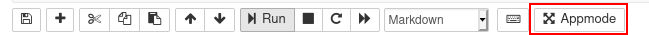
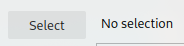
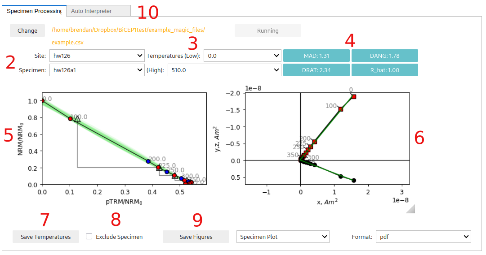
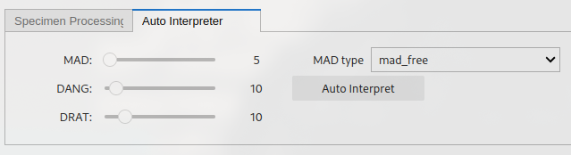
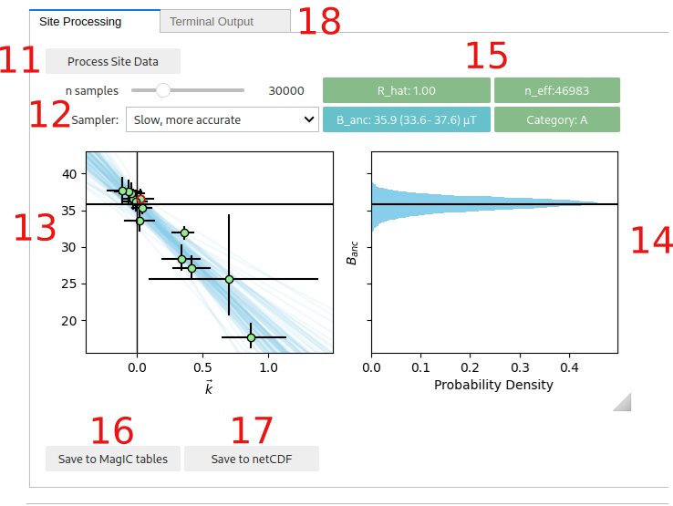

GUI usage guide#
Setting up a working directory#
Create a working directory for your project of interest Put your magic files (sites.txt, samples.txt, specimens.txt and measurements.txt) into this folder. If running your code on JupyterHub, see the for the jupyterhub setup see the “Upload your files” step.
Open the BiCEP_GUI notebook. In this notebook, check the first cell to contain the following code, so that the second cell contains the following code. Replace “my_filename” with your desired filename (no extension) and “my_working_directory” with the directory of your choice.
generate_arai_plot_table('my_filename',wd='my_working_directory/')
Running this cell will create a file called my_filename.csv in my_working_directory with all the arai plot data for your specimens. Note that some of your specimens may be missing from this file because their demagnetization was not fully completed (see thellier_gui.log for output).
Using BiCEP_GUI#
If you want, press the “Appmode” button (or “Voila” button), located in the top right corenr of your jupyter notebook. Otherwise just run through each of the cells in turn.
{kind=link}

{kind=link}

File selection button. Press select, choose your file and press select again. Then press “run” to import the data to the GUI. You cannot then select a new file.
{kind=link}

Site and specimen dropdowns. These dropdown menus allow you to choose a particular paleointensity experiment.
Minimum and maximum temperature steps (in Celcius) to use for the paleointensity experiment. We recommend using the Zijderveld plot (6.) and pTRM checks to choose which set of temperatures to use. We recommend either using the Zijderveld plot (6.) and pTRM checks to choose which set of temperatures to use. You can use the auto-interpreter tab to auto-interpret the “best range” of temperature steps according to the DANG, DRAT and MAD criteria.
Statistics about the direction and alteration of the ChRM used for paleointensity estimation. These may help with choosing which set of temperature steps to use. See the standard paleointensity definitons (Paterson et al, 2014, https://earthref.org/PmagPy/SPD/DL/SPD_v1.1.pdf) for more information on these statistics. In addition to these statistics, we present the worst R_hat diagnostic for a specimen. If R_hat>1.1 or R_hat<0.9, it may indicate an issue with the sampler (see 13.). In this case, this box will show up as red, and the specimen may be excluded using the checkbox (8.))
Arai plot with zero field first steps plotted as red circles, in field first steps plotted as blue circles, pTRM checks plotted as triangles, and pTRM tail checks plotted as squares. Additivity checks are not currently plotted. Circle fits from the BiCEP method will be plotted as green lines under the Arai plot after the site fit (9) has been performed. All plots can be rescaled using the “move” button (3rd symbol from the bottom on left side of plot) and right clicking and dragging, or the “zoom” button (2nd symbol from the bottom) and left clicking and dragging to zoom in, or right clicking and dragging to zoom out. The “home” button (second symbol from the top) resets the plot axis, as does changing the temperatures.
Zijderveld plot of the data, with x,y plotted as black circles and x,z plotted as red squares.
Saves the temperatures used for that specimen to a “BiCEP_gui.redo” file. This must be done for each specimen individually to change temperatures before running the sampler (9.). By default, all temperature steps are used for every specimen. However, the auto-interpreter tab can be used to automatically pick temperature ranges.
Checkbox for excluding a specimen. This should only be done if there is no reasonable interpretation of the specimen (e.g. alteration at low temperature, not demagnetizing to the origin).
Saves figures to file. Currently the Zijderveld plot and Arai plot have to be saved together (as do both site plots). The dropdowns can be used
The “auto-interpret” tab. Can be used to set threshold values for MAD, DANG and DRAT for auto-interpreting the data. The “Auto-Interpret” button will find the temperature range which satisfies these criteria whilst maximizing the FRAC criterion. The “MAD type” dropdown lets you choose whether you want MAD to be calculated for all temperature steps (mad_free) or only the zero-field first temperature steps (mad_coe).
{kind=link}

{kind=link}

The “Process Site Data” button performs the BiCEP method on that site and calculates the site level paleointensity. Depending on the speed of your computer and the sampler parameters used (10), this may take a while to run, especially for sites with many specimens. Please be patient. Progress can be monitored using the “Terminal output” tab.
Parameters for the MCMC sampler for the BiCEP method. The “n samples” slider increases the number of samples used in the MCMC sampler. Smaller numbers will take less time to run but result in lower accuracy in the resulting probability distribution. The “Sampler” button changes the parameterization of the MCMC sampler slightly (mathematically, the model is the same, but the parameters being sampled from are specified slightly differently). The “Fast” sampler has a larger step-size and so may underestimate the tails of non-gaussian paleointensity estimates, leading to worse sampler diagnostics. The “Slow” sampler has a much smaller step size, and so will explore these regions in more detail, but is slower and may need more samples to explore the whole distribution. We recommend using the “fast” sampler by default, unless your sampling diagnostics are poor. Both samplers will yield identical results with an infinite number of samples.
Plot of the estimated paleointensity for each specimen against Arai plot curvature. The currently displayed specimen in the Arai and Zijderveld plots has a red circle around it in this plot. The blue lines are samples from the posterior distribution for the relationship between specimen level paleointensity and curvature. The y intercept is the estimated site level paleointensity.
Histogram of the site level paleointensities sampled from the posterior distribution. This corresponds to the distribution of intercepts of the blue lines in (11.).
Diagnostics for the MCMC sampler (see the Stan Documentation at https://mc-stan.org/docs/reference-manual/analysis.html#notation-for-samples-chains-and-draws, https://mc-stan.org/docs/reference-manual/analysis.html#effective-sample-size.section). 0.9<R_hat<1.1 and n_eff>1000 is desired, with R_hat=1.00 and n_eff>10000 being ideal. Tweak the sampler parameters (10.) or measure more specimens if these parameters give poor results (indicated by an amber color for n_eff<1000 or a red color for bad R_hat). Also displayed here is the 95% credible interval for the site and the Category (see the interpreting bicep results page). The color of the category box indicates how to proceed. Green (Category A or B): accept site, Amber (Category C or D): measure more specimens, Red (Category D): ignore site.
Saves the results from the BiCEP method to the MagIC tables (site and specimen tables are altered).
Saves the results from the BiCEP method to a netCDF file which will load the result back into memory when restarting the notebook (note, these files can be large).
The “Terminal Output” tab shows the output of the terminal (to catch any errors in the GUI) and can be used to monitor the progress of the MCMC sampler.